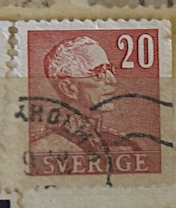
| SOURCE | TITLE| IMAGE MATCH | click to source page |
| HipStamp | DYNAMITE Stamps: Sweden Scott #303 – USED | Europe - Sweden, General Issue Stamp / HipStamp | 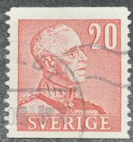 |
| eBay | Sweden Foreign Unchecked Stamp Used - #F369 | eBay | 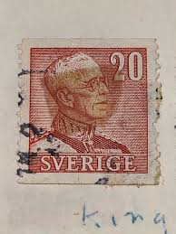 |
| Find Your Stamps Value | King Gustaf V 25o Orange stamp price, value | 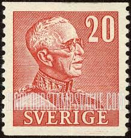 |
| eBay | Handstamped Used Swedish Stamps for sale | eBay | 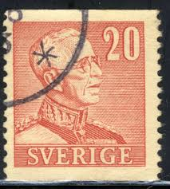 |
| Find Your Stamps Value | Value of sverige 20 ore stamps | 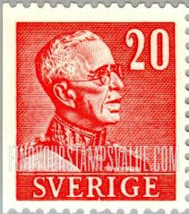 |
| eBay UK | Sweden 1939 Early Issue Fine Used 20ore. NW-218356 | eBay UK | 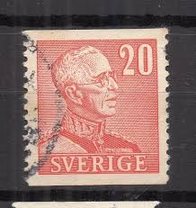 |
| Find Your Stamps Value | Value of sverige 25 ore stamps | 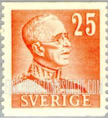 |
| HipStamp | Sweden 1939 Early Issue Fine Used 20ore. NW-218352 | Europe - Sweden, Stamp / HipStamp | 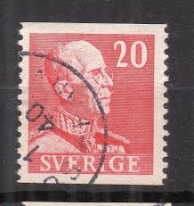 |
| HipStamp | Sweden 1939, King Gustav V, 20o, MH | Europe - Sweden, Stamp / HipStamp | 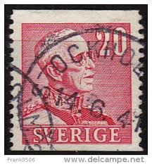 |
| trekronor.one | 276 ÄLEKULLA 10.5.50 PRAKT N59b | Auktion trekronor.one | 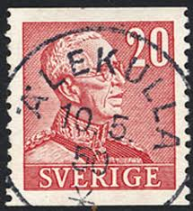 |
| HipStamp | Sweden 1939 Early Issue Fine Used 25ore. NW-218357 | Europe - Sweden, Stamp / HipStamp | 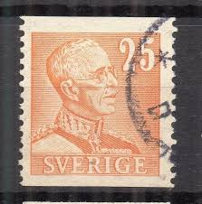 |
| Star and Stamp Store | Sverige | Facit 276 – Star and Stamp Store | 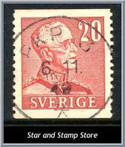 |
| Bob Shop | Sweden - Sweden - 1922 and 1939 King Gustaf V Definitives - 1939 P H Ling - 5 Used Hinged stamps for sale in Cape Town (ID:671474981) | 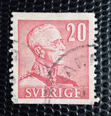 |
| Shutterstock | 74 King Gustav V Royalty-Free Images, Stock Photos & Pictures | Shutterstock | 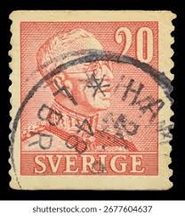 |
| trekronor.one | 276 LEMESJÖ 29.10.48 PRAKT N59b | Auktion trekronor.one | 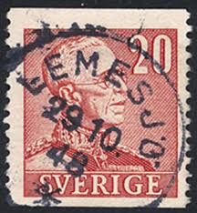 |
| Find Your Stamps Value | Value of Sverige 15 ore stamps | 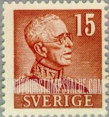 |
| Todocolección | suecia . año 1965. (*) yvert 520/1 - Buy Antique stamps of Sweden on todocoleccion | 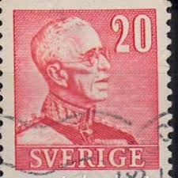 |
| Star and Stamp Store | Munkaljungby Pob 1 | Facit 276 – Star and Stamp Store | 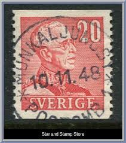 |
| Lindebilder | Gotland, Visby Vårdklockegatan 1917 - Lindebilder från Lindesberg | 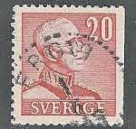 |
| Tradera | Se produkter som liknar F: 276 OSKARSTRÖM 24-2-42 på Tradera (711913044) | 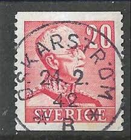 |
| Todocolección | Selos antigos da Suécia | página 270 | Compra e venda em todocoleccion | 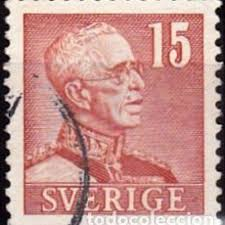 |
| Shutterstock | Sweden Circa 1939 Stamp Printed Sweden Stock Photo 125842448 | Shutterstock | 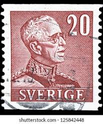 |
| Tradera | Se produkter som liknar F276 A stämplat Skärblacka 1941 på Tradera (707852979) | 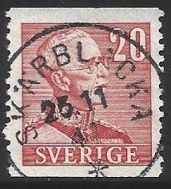 |
| hediger-metal.ch | European Stamps Sweden 300 Various Stamps Collection - Mixed Assortment For Philatelists Philately Assortment | 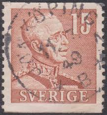 |
| PicClick IT | SVEZIA 1939/1942 - Usati 5/10/15/20/40 Öre Re Gustavo V #SVV EUR 1,30 - PicClick IT | 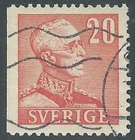 |
| Dreamstime.com | Postage Stamp Printed in Sweden Shows King Gustav V, Serie, 20 Swedish Ore, Circa 1940 Editorial Stock Image - Image of philatelic, collection: 166513319 | 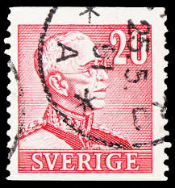 |
| Dreamstime.com | King Gustav V Stamp Stock Photos - Free & Royalty-Free Stock Photos from Dreamstime | 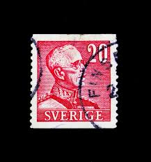 |
| Samlamera | Samlamera | Sveriges Filatelistförbund | 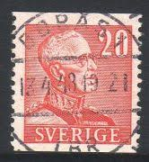 |
| Alamy | Cancelled postage stamp printed by Sweden, that shows portrait of Carl Michael Bellman (1740-1795), circa 1940 Stock Photo - Alamy | 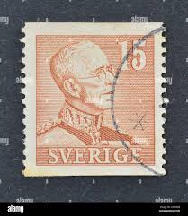 |
| Tradera | Se produkter som liknar f276 B, Skuttunge 27-4-50 Lyx.. på Tradera (698888287) | 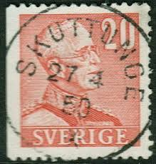 |
| eBay | Sweden 1939-1942 20 ore King Gustaf V Hinged Used (KBX) | eBay | 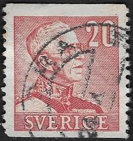 |
| eBay | 1939 GUSTAF V Typ I 20 Öre Red MNH Swedish Stamp Mount Included | eBay |  |
| Tradera | Se produkter som liknar f276, Torp 23-8-43 Prakt n58v.. på Tradera (700367884) | 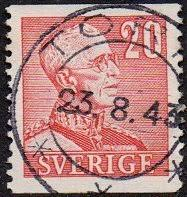 |
| Lindebilder | Karlskoga Frimärke 6/9 1944 - Lindebilder från Lindesberg | 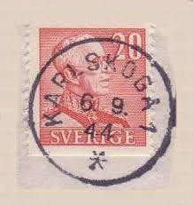 |
| Dreamstime.com | King Gustaf VI Adolf, editorial stock image. Image of historic - 278744809 | 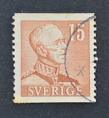 |
| Star and Stamp Store | Norsjö-Vallen | Facit 276 – Star and Stamp Store | 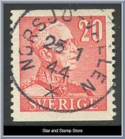 |
| HipStamp | Sweden 1939 Early Issue Fine Used 10ore. NW-218368 | Europe - Sweden, Stamp / HipStamp | 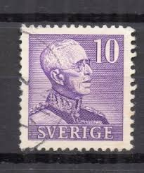 |
| eBay | SWEDEN:1942 SC#302A Used King Gustaf V T | eBay | 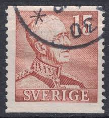 |
| Tradera | Se produkter som liknar Stämplat Sandared 12-6-1947 på Tradera (696387992) | 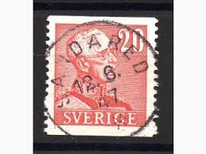 |
| lastdodo.com | 1964 King Gustaf VI Adolf type III Stamp catalogue - LastDodo | 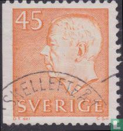 |
| eBay | Sweden Foreign Unchecked Stamp Used - #F366 | eBay | 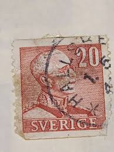 |
| Ettbud.se | Ettbud.se - Gratis onlineauktioner | 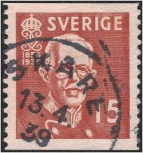 |
| ebid.net | GB, Queen Elizabeth Machin, Ellipse, brown 1993, 5p, #2 on eBid United States | 195769626 |  |
| eBay Australia | 1939-1942 Sweden - King Gustaf V - Pair 15 Ore Stamps | eBay Australia | 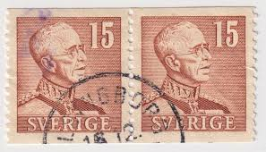 |
| Dreamstime.com | Gustav V Stock Photos - Free & Royalty-Free Stock Photos from Dreamstime | 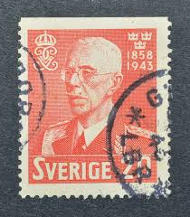 |
| Alamy | SWEDEN - CIRCA 1938: stamp printed by Sweden, shows Queen Christina, circa 1938 Stock Photo - Alamy | 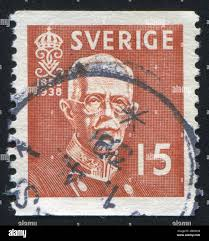 |
| eBay UK | SWEDEN 304 (Mi259) - King Gustav V "Perf 12.5 Vertically" (pa38449) | eBay UK | 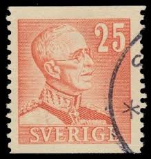 |
| Delcampe | Sweden - Sweden 1944 GERMAN CENSORED cover > Schweiz (WW2 Schweden 1939-45 Krieg war guerre deutsche Zensur Brief censure lettre | 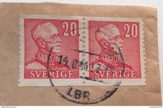 |
| eBay | No: 121924 - SWEDEN - "KING GUSTAV V" - AN OLD BLOCK OF 4 (20 ÖRE) - MNH!! | eBay | 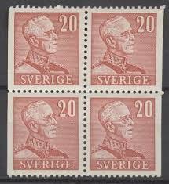 |
| Samlamera | Samlamera | Sveriges Filatelistförbund | 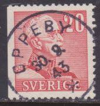 |
| Todocolección | suecia // yvert 255 a // 1938 ... usado - Buy Antique stamps of Sweden on todocoleccion | 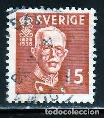 |
| Tradera | Se produkter som liknar F 276 VÄSTRA FÖNE 13.10.XX HÄL på Tradera (714324305) | |
| eBay | Sweden Used Topical Postal Stamps for sale | eBay | |
| eBay | 1948 Sweden pair of 20 ore red King Gustaf V stamps PKP 365 cancel | |
| Shutterstock | 2+ Hundred Gustaf V Royalty-Free Images, Stock Photos & Pictures | Shutterstock | |
| HipStamp | Sweden 1938 Early Issue Fine Used 15ore. NW-218280 | Europe - Sweden, Stamp / HipStamp | |
| Todocolección | suecia. 2004. fútbol. deportes. - Buy Antique stamps of Sweden on todocoleccion | |
| eBay | SWEDEN 1938 King Gustav V Facit 267 CB-pair /Scott 279+279a/Michel 251 B/Dr MNH | eBay | |
| digitaltmuseum.org | Forsberg, Karl-Erik (1914 - 1995) - DigitaltMuseum |